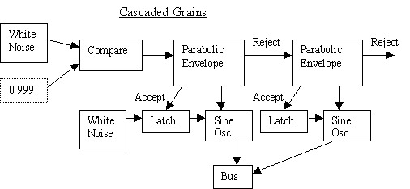

JSyn ---- Java Audio
Synthesis API
Granular Synthesis using Parabolic Envelope
-
Scheduling can be performed at DSP level.
-
ParabolicEnvelope accepts a triggers if in resting state. Outputs TriggerAccept.
-
TriggerAccept can be used to latch parameters for grain.
-
Rejects trigger if running. Outputs TriggerReject.
-
TriggerReject can be daisy-chained to other ParabolicEnvelopes.

[TOP] [PREVIOUS]
[NEXT] [EXAMPLE]
Visit the JSyn or SoftSynth
home pages.